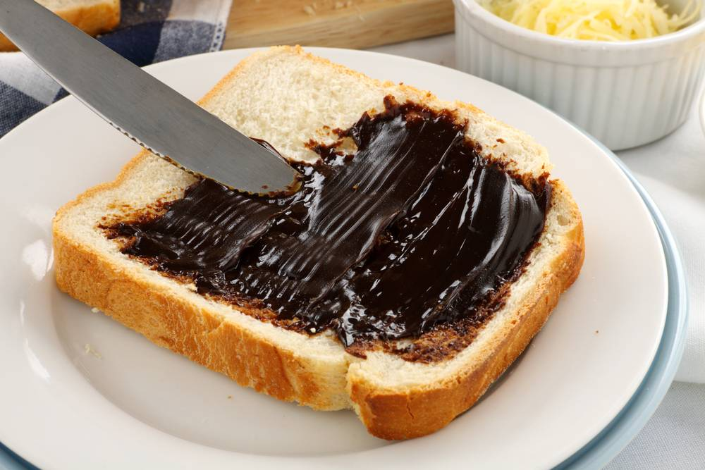

Vegemite on Toast

Description
An Australian Classic, vegemite is a house hold item in Australian homes and having it spread on toast in a staple for school children and sometimes adults.
Some people like it spread thick and some people like it thin but this guide will focus on the strong stuff only.
Ingredients
- Two slices of fresh bread
- Your favourite butter or margerine spread
- Two Tbs of vegemite
Steps
- Put your two slices of bread into the toaster and toast until crispy. (More on the burnt side if possible)
- Spread a generous amount of butter on the toast, making sure to spread to the edges of the crust
- Spread your vegemite over the melted butter. Tip: If you can see the toast underneath you are doing it wrong!
- Enjoy!
More recipes
Packet of Chips
Cup Noodles
Go home